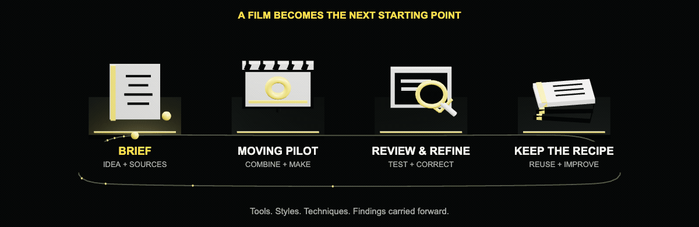

What to Test Before You Make the Whole Film
Two short explainers and a screencast test show how to isolate the visual decision a film depends on and check it before the full edit.
Read on ABVXAI-ASSISTED VIDEO PRODUCTION & CREATIVE RESEARCH
Framewright is an independent AI-assisted video production studio and research lab by Anton Biletskiy-Volokh. I make films, explainers and product stories while exploring how AI tools, visual styles and production techniques work together. Each film adds findings, corrections and reusable methods to the next.
 ONE RIBBON. TWO LETTERS.
ONE RIBBON. TWO LETTERS.A GROWING WORKBENCH
v0.12.0 · experimental release ↗Catalogue snapshot · 26 November 2026. Review entries include untested candidates.
THE OUTPUT, IN MOTION
Saved selection · 20 November 2026. Live playlist loads on view.
Publication links are owner-reported. Case records distinguish technical checks, creative decisions and known limits.
Two short explainers and a screencast test show how to isolate the visual decision a film depends on and check it before the full edit.
Read on ABVX
I tested Klap Pro and the OpusClip Pro trial on two films. The exported clips show what automation can find and where the vertical edit still needs a human.
Read on ABVX
Two autonomous films, a reframed interview and a sourced space essay show how I turn video feedback into specific checks without losing accepted work.
Read on ABVX
Lessons from a 3D car, a pop-art emperor and an illustrated puzzle: reuse production methods while checking motion, sound and each output format.
Read on ABVX
Lessons from The Last Seed and Good Dog: build causal stories, fix specific shots, review sound and preserve reusable work with or without Framewright.
Read on ABVX
How I am developing repeatable AI video workflows with Framewright: photo films, animated stories, precise revisions and a small Blender experiment.
Read on ABVXONE STUDIO. THREE WAYS TO WORK TOGETHER.
A creative work. A practical investigation.
Tools, styles and techniques tested together.
A product to explain, a story to tell, or a visual experiment to bring to life. Work with me on a film, from the creative direction to a publication-ready package for each screen.
For AI platforms and tool makers: test your product in a real film, alongside other tools, styles and techniques. Useful findings can become published examples and documented workflows. Recommendations depend on the results, not the partnership.
Bring a repeatable video process into your business, content team or production studio. Explore tool combinations, review steps and reusable recipes around your needs and resources. Fellow creators can study, adapt and contribute to the open methods.

Product collaborations, evaluations and creator partnerships.
A FILM, A TOOL PARTNERSHIP, OR A TEAM WORKFLOW?
Tell me what you want to make, test or improve.
For tool partnerships, include the product and the production question you want to explore.